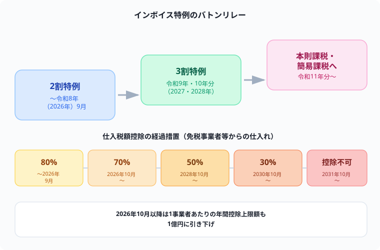

インボイス「2割特例」はいつまで？「3割特例」新設と経過措置の変更点【令和8年度税制改正】
簿記1級の税効果会計と格闘している僕が、この記事を書きながら一番驚いたのが「インボイスの経過措置、こんなに変わってたのか」ということでした。制度が始まった頃の情報のまま止まっている人、正直かなり多いと思います。
「2割特例っていつまでだっけ？」「終わったらどうなるの？」という疑問に、国税庁の一次情報だけを根拠にして、令和8年度税制改正での変更点を整理しました。消費税法の理解にもつながる内容なので、簿記・税理士受験生の方にも役立つはずです！
記事の末尾のほうにある【いいねボタン】をポチッと押してもらえると、僕の毎日の勉強と執筆のモチベーションになるので、めちゃくちゃ嬉しいです！
結論：2割特例は2026年9月で終了、その後は3割特例へ
先に結論を言うと、免税事業者からインボイス発行事業者になった小規模事業者向けの負担軽減措置「2割特例」は、令和8年（2026年）9月30日が属する課税期間までで終了します。個人事業主なら2026年分の確定申告が最後です。
その後は、令和8年度税制改正で新設された「3割特例」（個人事業主限定）に移行し、あわせて仕入税額控除の経過措置も延長・見直しされました。
2割特例のおさらいと終了時期
2割特例は、免税事業者からインボイス発行事業者に登録した小規模事業者が、消費税の納付税額を売上に係る消費税額の2割に抑えられる負担軽減措置です。

3割特例とは（令和8年度税制改正で新設）
2割特例終了後の激変緩和措置として、個人事業主限定の「3割特例」が新設されました。
個人事業主のみが対象です。法人は対象外なので注意してください。免税事業者からインボイス発行事業者として登録したことで課税事業者になった人が対象です。
基準期間の課税売上高が1,000万円以下であることなど、2割特例と同様の要件です。
令和9年分・令和10年分（2027年・2028年）の確定申告に適用されます。
納付税額を売上に係る消費税額の3割に抑えられます（2割特例より1割分、負担が重くなる設計です）。
仕入税額控除の経過措置も延長・見直し
インボイス発行事業者以外（免税事業者等）からの課税仕入れについても、一定割合を仕入税額として控除できる経過措置があります。この適用期限が2年間延長され、控除割合も見直されました。
| 期間 | 控除割合 |
|---|---|
| 制度開始（2023年10月）〜2026年9月30日 | 80%控除（従来通り） |
| 2026年10月1日〜2028年9月30日 | 70%控除 |
| 2028年10月1日〜2030年9月30日 | 50%控除 |
| 2030年10月1日〜2031年9月30日 | 30%控除 |
| 2031年10月1日以降 | 控除不可（0%） |
簡易課税制度への移行もしやすくなった
2割特例・3割特例を適用した事業者が、翌課税期間から簡易課税制度に移行しようとする場合の届出期限も緩和されています。適用を受けた課税期間の翌課税期間に係る確定申告期限までに届出書を提出すれば、その翌課税期間から簡易課税を適用できるようになりました。
まとめ
- 2割特例は令和8年（2026年）9月30日が属する課税期間で終了。個人事業主は2026年分の申告が最後
- 終了後は個人事業主限定の「3割特例」に移行（2027年・2028年分に適用、納付税額は売上税額の3割）。法人は対象外
- 仕入税額控除の経過措置は2年延長。80%→70%（2026年10月〜）→50%（2028年10月〜）→30%（2030年10月〜）→控除不可（2031年10月〜）と段階的に縮小
- 2026年10月以降、1事業者あたりの年間控除上限額が1億円に引き下げ
- 2割特例・3割特例適用後の簡易課税制度への移行届出期限も緩和
⚔ 制度の変化を追う力は、簿記・税理士試験にもそのまま活きる
税制は毎年少しずつ変わります。この「変化を追いかけて正確に理解する」力そのものが、簿記1級や税理士試験の消費税法対策にも直結します。Study Questなら毎日の勉強を記録しながらコツコツ継続できます。完全無料。
無料で始める →制度は生き物のように変わり続けます。「昔調べたから大丈夫」が一番危ない考え方だと、今回国税庁の一次情報を確認していて痛感しました。定期的に一次情報を見返す習慣、一緒につけていきましょう。
ここまで読んでくれてありがとうございます！もしこの記事が役に立ったら、僕の毎日の勉強と執筆のモチベーション維持のために、この下にある【いいねボタン】をポチッと押してもらえると、めちゃくちゃ励みになります。